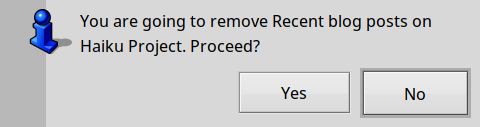

Topics
|
How to remove feedsto remove a feed you can choose either one of these 2 methods:
Note: to start this action you can use the shortcut Command+e. This is an example:

If you press No nothing happens. Otherwise, if you press Yes, the newspaper with all its contents will be removed.
Remember, since newspapers are saved as folders and the news as files, this action will remove both folders and files. If you want to remove only the news (maybe because they clog the loading) you can use the action News -> Clear news; in this case you'll delete only the news keeping the feed installed and available for future downloads |